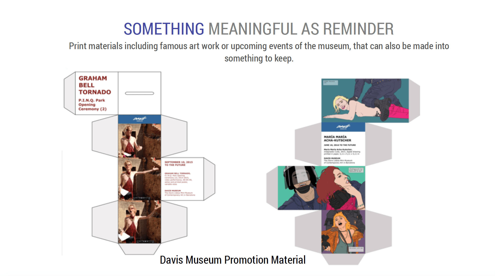

Customer Experience Design at UMMA

As a part of our Contextual Inquiry (SI-501) course, we had to work with the clients to work with them and recommend them solutions. The client we got was University of Michigan Museum of Art (UMMA). We did background research and interviews with the client employees and customers to study in detail about the problem and issues.
Problem Statement
The client currently wants us to improve the visitor experience in both physical and virtual space. They want to encourage return visits and make on-site experience comfortable and easy. Currently, museum has visitor desks at the entrance which have maps and other informational resources. However, because of lack of personal interaction at information desks, many visitors get confused and end up going to souvenir shops to ask about location questions and other doubts. We have been asked to research on current models that other university museums have adopted. We have to find ways in which UMMA can enhance its presence within the student community.
Approach
For this project, we tried to focus on needs of the client by doing Contextual Inquiry. Overall we conducted 7 interviews with different employees such as Communications Manager, Curator, Administration Officer, Visitor experience manager. We collected the qualitative data from the interview and analyzed it in the form of Affinity Diagrams. From those diagrams we identified user needs and patterns. Finally, we recommended them our proposed design solution.
Affinity Analysis
After conducting 7 days of interviews with employees and user (students and couples), we analysed our data in the form of affinity wall. Some of the patterns began to emerge :
- Problems with Signage
“We don’t have signs by our elevator to tell people what is on each floor.”[E04]
“Some of the galleries are named after donors on their signs, but the gallery names are not on the map or related to what is in them.” [E04]
“Visitors come to the store to ask where to find a certain work.” [E02] - Navigation
"Which entrance should I enter from?[U02]" - Finding artwork is hard
"Which event should I go to?"[U04] - Lack of a information desk person.
"I don't use website to find about stuff happening in the museum.[U03]" - Making the space more comfortable.
"Layout of the museum is unwelcoming because there are no places to sit.[U04]"
- Confused about implementation of technology.
"Technology might act as a distraction for the visitors. We want them to focus on art galleries.[E07]"
Brainstorming ideas
After we had our issues or challenges, we started brainstorming potential design solutions. Most of these solutions were based on the issues and problems faced by the client. We used “How Might We” approach from Google design sprints to come up with design problems. We narrowed down our focus to navigation and way-finding related issues.
Four solutions were the result of comparative analysis, secondary research, interviews with staff, and visitor observations. Through our research, we decided to focus on customer service, general navigation issues, the personalization of visitor experiences, and the consolidation of feedback to increase the likelihood of return visits. However, we propose the museum could make a number of minor changes to increase the likelihood of positive on sight experience, in addition to a few major design ideas. Some of the design solutions were as follows :


- 
In conclusion, UMMA is an exceptional institution at providing learning experiences and unique
exhibits and events; however, further effort can be dedicated to improving customer service,
navigation, and consolidating feedback. The first few moments in a museum are often the most
difficult for a new visitor, and a friendly face located at the information desk can go a long way
towards improving the experience.
Additionally, the museum can include seating in the entryway
and clear labeling on the information desk place visitors in a much better mind set. When a visitor
leaves the information desk, frequent and accurate signs in addition to layered maps make a
considerable difference in way finding. Finally, UMMA needs a method and protocol to consolidate
their visitor feedback; which will provide information and data for future endeavors.
Reflection
Journey of doing contextual inquiry at UMMA was my first attempt on interacting with a real client in University of Michigan. Reflecting on this project, I feel overall our team did a great job in overall process including client communication, making interview protocols, conducting interviews and doing affinity analysis. After the final presentation, our client gave a constructive feedback regarding feasibility of some proposed solutions. They were surprised to hear the problem which they were initially thinking was much different than the real problem or the “need” of the users. In some ways, I found the problem of navigation related to interaction design in mobile apps as in the former people had trouble in navigating their ways in the museum while in the later people have trouble navigating different screens. Overall, our design decisions were based on user’s pain-points and needs which ultimately led to a positive response from the client.
Some other projects
- Design Strategy at Chalopadho
Developed Content Strategy for the product to increase the engagement by 50% in teacher analytics. - Interactive Museum App
Incorporated various learning theories to engage kids like Constructivism, Behaviorism and Scaffolding. Our process involved defining learning goals, brainstorming, personas, storyboarding and wireframes. - Design Interfaces for Autism
Designing interfaces for children in Tammana Autism Center.